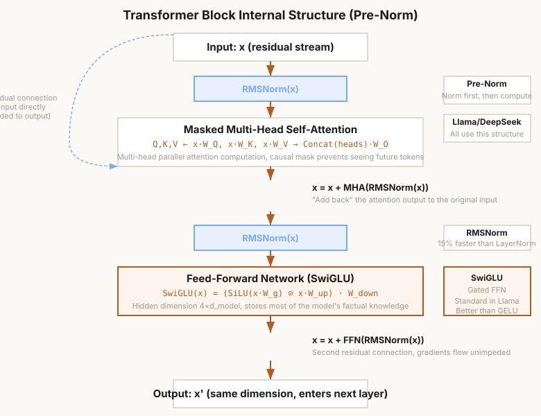

第5章 Transformer Block
RMSNorm + FFN + SwiGLU + mHC 超连接——构建 LLM 的核心单元
本章怎么学：把 Block 看成 Attention + FFN + 残差
- 前置知识：第 3-4 章注意力输出、PyTorch Module、残差相加。
- 学习目标：解释 Transformer Block 的残差路径、归一化位置、FFN/SwiGLU 的容量作用、资源预算，以及 Pre-Norm 稳定深层训练的原因。
- 课前阅读：阅读 LayerNorm、RMSNorm、SwiGLU 的核心公式，并复习残差网络和梯度传播。
- 课后阅读：比较 Post-Norm、Pre-Norm、RMSNorm、DeepNorm/超连接思路在训练稳定性上的差异。
- 本章产出：LayerNorm/RMSNorm、SwiGLU FFN、TransformerBlock 和 block 资源估算。
- 完成标准：你能说明为什么 Block 输入和输出都保持
[batch, seq, d_model]。 - 练习产出：提交 Block 实现、梯度检查、归一化 ablation，以及 FFN 参数量、FLOPs、激活显存分析；配套作业见 assignments/ch05_block/。
5.1 Decoder-only 架构全景——Transformer Block 的"积木"视角
许多主流自回归 LLM（如 GPT、Llama、DeepSeek 系列的语言模型）采用 Decoder-only 架构：没有单独的编码器，主要由堆叠的 Transformer Block 组成。仍然要注意，NLP 和多模态系统中也存在 encoder-only、encoder-decoder 或混合架构；本章聚焦 decoder-only 路线。每个 Block 包含两个核心子层：
- 自注意力层 (Self-Attention) — 让 token 之间交换信息（第4章已完成）
- 前馈神经网络 (FFN) — 对每个 token 独立进行非线性变换
每个子层外部包裹着 残差连接 和 层归一化。整体形式为（Pre-Norm 规范）：
为什么需要两个不同的子层？注意力提供的是"信息检索"——每个 token 从整个序列中聚合信息。FFN 提供的是"信息处理"——每个 token 在收到信息后进行复杂的非线性变换。没有 FFN，模型就只是一个线性加权求和系统，表达能力极其有限。
每一层 Block 的输出维度始终保持为 ，这使得我们可以堆叠任意数量的 Block——GPT-3 堆叠了 96 层，DeepSeek-V3 堆叠了 61 层。

图 5-1: Transformer Block 内部结构 (Pre-Norm + RMSNorm + SwiGLU)
5.2 编程练习 1：实现 LayerNorm（不用 nn.LayerNorm）
层归一化 (Layer Normalization) 是 Transformer 训练稳定性的基石。与 BatchNorm 不同，LayerNorm 在特征维度上做归一化，不依赖 batch 大小——这对变长序列和自回归模型至关重要。
🖥️ 练习 1：LayerNorm 从零实现
任务：实现 LayerNorm 类，不可以使用 nn.LayerNorm。
要求：
- 可学习参数
gamma（缩放，初始化为全 1）和beta（偏移，初始化为全 0） eps=1e-6防止除零- 支持任意形状输入：归一化在最后一维进行
- 使用
unbiased=False的方差计算 - 验证：与
nn.LayerNorm的输出一致（随机输入，误差 < 1e-5）
# 预期用法
ln = LayerNorm(dim=768)
x = torch.randn(2, 16, 768)
y = ln(x)
assert y.shape == x.shape
# 与 PyTorch 官方对比
ref = nn.LayerNorm(768, eps=1e-6)
ref.load_state_dict({'weight': ln.gamma, 'bias': ln.beta})
y_ref = ref(x)
assert torch.allclose(y, y_ref, atol=1e-5)
💡 注意 var(unbiased=False)：LayerNorm 使用总体方差（除以 N 而非 N-1），这与统计中的样本方差不同。使用 unbiased=False 确保与 nn.LayerNorm 的实现一致。
5.3 深度理论：Pre-Norm vs Post-Norm——归一化位置如何决定训练稳定性
归一化层放在子层的输入还是输出上，对训练动态有决定性影响。这是一个在 LLM 规模扩展过程中被反复验证的关键设计决策。
Post-Norm（原始 Transformer）
原始 Transformer（Vaswani et al., 2017）使用 Post-Norm：
归一化在残差连接之后。这意味着残差分支的输出（Attention/FFN 的输出）会干扰残差流中原始信息的尺度。在深层网络中，这种干扰持续累积，导致梯度不稳定。
Pre-Norm（现代 LLM 标准）
Pre-Norm 将归一化放在子层的输入上：
关键优势：残差流保持未归一化。信息可以沿着残差路径在各层之间较少受归一化层直接压制，梯度路径也更短、更直接。Pre-Norm 通常更容易训练较深网络；实际可扩展深度仍取决于初始化、优化器、残差缩放、数据和实现细节。
训练动力学分析
更正式地，考虑一个 L 层 Pre-Norm Transformer 的残差流：
在 Post-Norm 中，归一化在残差连接之后，（被归一化强制固定），但每个子层输出的方差 需要精细控制。在 Pre-Norm 中，残差流的方差会逐层增大（这是正常的——深层需要有更大的表示范围），而不是被强制截断。
| 特性 | Post-Norm | Pre-Norm |
|---|---|---|
| 代表模型 | 原始 Transformer (2017) | GPT-2/3/4, Llama, DeepSeek |
| 训练稳定性 | 对初始化、warmup 和残差尺度更敏感 | 通常更稳定，学习率容忍度可能更高 |
| 深层扩展 | 较难扩展到很深的网络 | 更容易扩展到深层网络 |
| 残差流方差 | 被强制为 1 | 可随深度增长 |
| 梯度路径 | 需要穿过残差后的归一化位置 | 残差路径更直接 |
5.4 编程练习 2：实现 RMSNorm——Llama/DeepSeek 的选择
RMSNorm（Zhang & Sennrich, 2019）去掉了 LayerNorm 的均值中心化，只保留 RMS 缩放。它基于一个简单的观察：均值中心化对训练质量的影响微乎其微，而节省的计算量（约 15%）却很可观。
🖥️ 练习 2：RMSNorm 模块
任务：实现 RMSNorm——只做 RMS 缩放，去掉均值中心化。
要求：
- 唯一可学习参数
gamma（初始化为全 1），没有 beta eps=1e-6防止除零- 计算
rms = sqrt(mean(x^2) + eps)，然后x / rms * gamma - 验证：RMSNorm(x) 的输出范数（L2 norm）近似等于 gamma 的范数
- 验证：RMSNorm 的输出 方向 与输入相同——它只改变向量的长度，不改变角度
# 预期用法 rms = RMSNorm(dim=768) x = torch.randn(2, 16, 768) y = rms(x) assert y.shape == x.shape # 验证方向不变 cos_sim = (x * y).sum(dim=-1) / (x.norm(dim=-1) * y.norm(dim=-1)) assert torch.allclose(cos_sim, torch.ones_like(cos_sim), atol=1e-6) # 方向不变意味着 cos_sim ≈ 1.0
5.5 深度理论：FFN 作为键值存储器——模型知识存储的秘密
FFN 不仅仅是"非线性变换"。从可解释性视角来看，Geva et al. (2021) 揭示了 FFN 的本质：一个大规模键值存储器。
重新审视 FFN
标准 FFN 的计算：
这个求和形式的每个项都揭示了一个"键值对"：
- 键 (Key): 检测输入是否匹配某种模式。ReLU 门控决定是否激活——只有匹配的键才会产生非零输出
- 值 (Value): 是键 i 对应的输出"知识片段"
- 存储容量: 就是键值对的数量。GPT-2 small 有 3072 个键值对，GPT-3 175B 每层有 4 × 12288 = 49152 个
知识的层级分布
不同层的 FFN 存储不同类型的知识：
- 底层（1-4 层）：语法模式——检测 POS 标记、短语边界、浅层句法结构
- 中层（5-8 层）：事实知识——"巴黎是法国的首都"、"水在 100°C 沸腾"
- 高层（9-12 层）：长程依赖和推理——代词指代消解、多步推理模式
模型编辑的启示
这个视角直接启发了 模型编辑 方法。ROME (Meng et al., 2022) 利用 FFN 键值存储的性质，通过定位存储特定事实的 FFN 神经元，直接修改其值向量来更新模型中的事实知识——不需要重新训练。
5.5A 机制可解释性：从“看起来相关”到“改动会改变输出”
把 FFN 看成键值存储器之后，一个自然问题是：怎样判断某个 neuron、head、layer 或 residual stream 方向真的参与了某个行为？高校课程需要区分三类问题：表示中是否包含信息、模型是否使用这些信息、改动这些信息是否会改变输出。
四类常用方法
| 方法 | 核心做法 | 能回答 | 不能单独说明 |
|---|---|---|---|
| Probing | 用线性/小模型从 hidden state 预测 POS、句法、实体等标签 | 表示里是否可读出某类信息 | 模型生成时是否真的使用该信息 |
| Logit attribution | 把 residual stream 或 neuron 输出投影到 unembedding 方向 | 哪些组件直接推高或压低某些 token | 间接路径和后续层重写效果 |
| Activation patching | 把干净样本中的某层激活替换到扰动样本中 | 某位置/层激活是否足以恢复行为 | 是否只有这一条路径负责该行为 |
| Ablation | 置零、替换或屏蔽某个 head/neuron/layer 输出 | 移除组件会造成多大性能或行为变化 | 模型是否通过冗余路径补偿 |
一个最小案例：主语-动词一致性
给定 prompt：The keys to the cabinet ...，模型应更偏向 are 而不是 is。可解释性实验可以这样设计：
- 构造对照：把主语从复数
keys改为单数key，保持干扰短语to the cabinet不变。 - 定位层和位置：比较主语 token、介词短语 token 和预测位置的 residual stream。
- 做 patching：把复数样本中某层某位置的激活替换到单数样本，观察
are相对is的 logit 差是否恢复。 - 再做 ablation：屏蔽候选 head 或 FFN neuron，观察一致性 logit 差是否下降。
结论边界
如果 probe 准确率很高，只能说明 hidden state 中有可线性读出的信息；如果 patching 能恢复输出，说明该激活对这组 prompt 的行为有因果作用；如果 ablation 让性能下降，说明组件在当前任务中重要。但这些结论都依赖 prompt 分布、层位置、替换方式和度量口径，不能直接推广为“模型所有语法能力都在这个 head 里”。
5.6 编程练习 3：实现 FFN 与 SwiGLU 激活
GPT-2 使用 GELU 激活的 FFN，但现代 LLM（Llama、Mistral、DeepSeek）全部使用 SwiGLU——一种门控激活函数，通过三个权重矩阵实现信息的选择性通过。
其中 （Sigmoid Linear Unit）是无上界有下界的平滑激活函数。
🖥️ 练习 3：实现 FFN (GELU) 和 SwiGLU
任务：实现 FFN（GELU）和 SwiGLU 两个模块。
要求 (FFN)：
- 两层线性：
d_model → d_ff → d_model - 中间使用 GELU 激活（用
F.gelu） - 默认
d_ff = 4 * d_model（GPT 风格）
要求 (SwiGLU)：
- 三个线性层：
w1（门控）、w2（值）、w3（输出） - 默认
d_ff = int(8/3 * d_model)——确保总参数量与 4x FFN 一致 - 使用
F.silu激活门控分支 - 前向：
w3(F.silu(w1(x)) * w2(x))
# 预期用法 ffn = FFN(d_model=768) # d_ff = 3072 swiglu = SwiGLU(d_model=768) # d_ff = 2048 x = torch.randn(2, 16, 768) y1 = ffn(x) y2 = swiglu(x) assert y1.shape == y2.shape == (2, 16, 768) # 参数量应大致相同 ffn_params = sum(p.numel() for p in ffn.parameters()) # ~4.7M swiglu_params = sum(p.numel() for p in swiglu.parameters()) # ~4.7M assert abs(ffn_params - swiglu_params) / ffn_params < 0.05
💡 SwiGLU 为什么常被采用？门控机制允许模型选择性地通过信息——当门控值接近 0 时，对应维度的信息被阻塞。相比 GELU 的"所有神经元都激活但程度不同"，SwiGLU 提供了更灵活的"开关"控制。许多 Transformer 实践报告中 SwiGLU 表现良好，但具体 PPL 改善取决于模型规模、数据、宽度配平、训练预算和实现细节，不应写成固定收益。
5.6A 为什么现代 LLM 偏好 SwiGLU：门控、参数预算与表达能力
把 SwiGLU 只记成 w3(silu(w1(x)) * w2(x)) 还不够。它真正重要的地方在于：FFN 不再只是“先投影、激活、再投影”，而是把每个隐藏维度拆成门控分支和值分支，让模型在 token 级别决定哪些中间特征应该通过。
参数预算为什么是 8/3
标准 4x GELU FFN 忽略 bias 时有两块矩阵：
SwiGLU 有三块矩阵：门控 、值分支 和输出投影 。若中间宽度为 ，参数量近似是：
为了与 4x FFN 保持相近参数预算，令 ，得到 。因此 8/3 不是经验随手取值，而是同等参数预算下引入门控机制的配平结果。
门控乘法改变了什么
在 GELU FFN 中，中间神经元的输出主要由单一路径 决定。SwiGLU 则产生逐维乘法：
这相当于让一个模式检测器控制另一个值通道是否被写入残差流。与普通激活相比，门控乘法更容易表达“只有在条件 A 成立时，才使用特征 B”的交互关系。这类条件交互在语言建模中很常见：代码缩进、括号闭合、实体属性、指代关系和格式约束都不是孤立特征，而是上下文条件下才有意义。
SwiGLU 与 MoE 的区别
SwiGLU 是 dense FFN：每个 token 都经过同一组矩阵，只是在隐藏维度上做软门控。MoE 是 sparse FFN：每个 token 只激活少数专家，靠 router 在专家之间选择。二者都引入“选择性计算”，但粒度不同：
| 机制 | 选择发生在哪里 | 每 token 激活 | 主要收益 | 主要风险 |
|---|---|---|---|---|
| SwiGLU | 单个 FFN 内部维度 | 所有矩阵都参与计算 | 同等参数预算下增强条件交互 | 激活显存和 dense 计算仍然存在 |
| MoE | 多个专家之间 | 只选 top-k 专家 | total parameters 大幅增加而 activated parameters 可控 | 负载均衡、通信和路由稳定性更复杂 |
5.6C 单个 Transformer Block 的参数、FLOPs 与激活显存
只会写出 TransformerBlock.forward 还不够。训练工程里必须能估算一个 block 为什么贵：参数主要来自投影矩阵，FLOPs 主要来自矩阵乘法和 attention 的二次项，训练激活显存还会保存 Q/K/V、FFN 中间值和 attention scores。
参数量近似
对一个 Pre-Norm block，忽略 bias，MHA 的 Q/K/V/O 投影约为 。SwiGLU 有三块矩阵，约为 。两个 RMSNorm 只有 个可学习缩放参数。
FLOPs 与激活显存
课程作业中的 estimate_block_resources 使用常见矩阵乘法约定：一次 [m,k] @ [k,n] 约为 FLOPs。它分别估算 QKV 投影、attention score、attention value mixing、输出投影和 SwiGLU 三个线性层的主要 FLOPs。
激活显存估算包含主要张量：Q/K/V、SwiGLU 的 gate/value 中间激活、attention scores 以及残差流。attention scores 的大小是 ，这就是为什么长序列训练比短序列训练贵得多。FlashAttention 可以避免完整物化 attention matrix，但普通教学实现会显式保存它。
5.7 编程练习 4：组装完整的 TransformerBlock
现在将所有组件——RMSNorm + MHA/GQA + SwiGLU + 残差连接——组合为一个完整的 Block。
🖥️ 练习 4：TransformerBlock 组装
任务：实现 TransformerBlock——包含两个子层的完整 Decoder Block。
要求：
- 子层 1：RMSNorm → MultiHeadAttention (来自第4章) → Dropout → 残差连接
- 子层 2：RMSNorm → SwiGLU → Dropout → 残差连接
- Pre-Norm 布局（归一化在子层输入而非输出）
- 支持可选的
mask参数传递给 Attention - 验证：输出 shape 与输入一致
(batch, seq_len, d_model) - 验证：梯度可以反向传播到所有参数
# 预期用法
block = TransformerBlock(d_model=768, n_heads=12, d_ff=2048, dropout=0.1)
x = torch.randn(2, 64, 768)
mask = torch.tril(torch.ones(64, 64)).unsqueeze(0).unsqueeze(0)
out = block(x, mask=mask)
assert out.shape == (2, 64, 768)
# 梯度检查
loss = out.sum()
loss.backward()
assert all(p.grad is not None for p in block.parameters())
print("梯度流通正常 ✓")
💡 这里约 25 行核心代码完成了完整的 Transformer Block。关键设计是"归一化路径与残差路径分离"——信息沿残差路径无阻碍流动（无非线性、无归一化），RMSNorm 只应用于子层的输入。
5.8 深度理论：梯度检查——为什么需要验证反向传播？
在实现复杂的自定义算子时，手写的反向传播（backward function）可能包含数学错误。即使是一个符号错误，也可能导致模型"训练"了很长时间却无法收敛。
有限差分的数学原理
PyTorch 的 torch.autograd.gradcheck 使用中心差分（Central Difference）来逼近数值梯度：
中心差分的误差是 ，而前向差分的误差是 。因此中心差分更精确——代价是每个参数维度需要两次前向计算。
为什么需要 gradcheck？
考虑一个手动实现的反向传播函数，其中有一个符号错误：
这种错误在简单模块中很容易发现，但在复杂的自定义算子（如 FlashAttention 的 Triton kernel）中，手动推导和实现反向传播是一个常见的调试环节。
float64（有限差分对 float32 的舍入误差敏感）；用极小输入（batch=2, seq=8, dim=64）验证；设置 eps=1e-4 和 atol=1e-3。5.9 编程练习 5：用 torch.autograd.gradcheck 验证反向传播
🖥️ 练习 5：LayerNorm 梯度检查
任务：使用 torch.autograd.gradcheck 验证你的 LayerNorm 实现的反向传播正确。
要求：
- 定义
LayerNormFunction——继承torch.autograd.Function，手动实现 forward 和 backward - 在 backward 中，验证 backward 公式是否正确
- 用
gradcheck比较数值梯度和解析梯度 - 先在小输入上测试（batch=2, seq=8, dim=64），再在更大输入上测试
- 使用
float64以获得足够的数值精度
# 预期用法
ln_func = LayerNormFunction.apply
x = torch.randn(2, 8, 64, dtype=torch.float64, requires_grad=True)
gamma = torch.ones(64, dtype=torch.float64, requires_grad=True)
beta = torch.zeros(64, dtype=torch.float64, requires_grad=True)
test = gradcheck(ln_func, (x, gamma, beta, 1e-6), eps=1e-4, atol=1e-3)
print(f"梯度检查通过: {test}") # 应为 True
💡 最佳实践：逐个模块验证梯度（LayerNorm 单独测、SwiGLU 单独测、整个 Block 单独测）。不要把所有模块混在一起测试——如果失败了你不知道是哪个模块的问题。
5.10 深度理论：DeepSeek V4 mHC 超连接——Birkhoff 约束与 Sinkhorn-Knopp 迭代
DeepSeek-V4 引入的 mHC（Manifold-Constrained Hyper-Connections，流形约束超连接）是一种扩展残差连接的前沿设计。它在 ByteDance 的 Hyper-Connections（Zhu et al. 2024）基础上，把可学习的层间连接矩阵约束在流形（Birkhoff polytope）上——核心思想是：层间连接强度可以学习，但连接矩阵需要受约束，避免引入过大的放大效应。
传统残差连接的局限
残差连接 假设每层的贡献是固定的 1:1 比例。但不同层对最终输出的贡献可能不同——有些层可能只需要微调前一层的表示，有些层可能需要大幅修改。
Birkhoff Polytope（双随机矩阵）
mHC 通过学习一个连接矩阵 来控制层间连接强度，但直接学习 可能导致梯度爆炸。解决方案：约束 A 属于 Birkhoff polytope。
双随机矩阵具有有用的谱范数上界性质，常写作 （在相应假设下成立）。这可以约束层间连接的放大效应，降低梯度放大的风险；真实训练稳定性还取决于残差缩放、优化器、数据分布和实现细节。
Sinkhorn-Knopp 迭代
将任意矩阵投影到 Birkhoff polytope 的算法如下：
交替进行行归一化和列归一化。在矩阵元素为正、目标边际可行等条件满足时，Sinkhorn-Knopp 会收敛到满足给定行/列边际的缩放矩阵；收敛速度和数值稳定性取决于矩阵条件、温度/缩放和迭代次数。实践中常用少量迭代得到近似双随机结构，但不能保证任意输入 10 次迭代都足够。
mHC 的多头特性：多个独立的连接矩阵（头）捕获不同类型的层间依赖，最后取均值。DeepSeek-V4 报告显示，在其设定下 Birkhoff 约束把残差路径的信号放大系数压到约 1.6×，并用于 1.6T 参数（V4-Pro，激活 49B）规模模型的训练。这里的数值应理解为报告中的实验观察，不是跨架构、跨优化器的通用常数。
5.11 本章总结
你构建了 LLM 的核心构建模块——Transformer Block：
- ✅ LayerNorm（从零实现） — 均值 + 方差归一化 + 仿射变换，理解为什么 LLM 选择它而非 BatchNorm
- ✅ RMSNorm — 去掉均值中心化，提升 15% 速度，Llama/DeepSeek 的选择
- ✅ Pre-Norm vs Post-Norm — 理解了为什么"归一化放在哪里"决定了能否训练 1000 层网络
- ✅ 机制可解释性 — 区分 probing、logit attribution、activation patching 和 ablation 的适用边界
- ✅ SwiGLU 门控 FFN — 三个权重矩阵 + SiLU 门控，信息选择性通过
- ✅ SwiGLU 参数预算 — 用 8/3 宽度在接近 4x FFN 参数量下引入门控乘法
- ✅ TransformerBlock 组装 — RMSNorm + MHA + SwiGLU + 残差，~25 行核心代码
- ✅ 梯度检查 — 用 gradcheck 验证反向传播正确性
- ✅ DeepSeek V4 mHC — Birkhoff polytope 约束、Sinkhorn-Knopp 迭代、可学习的超连接
下一章，我们将用 12 个这样的 Block 堆叠出一个完整的 GPT-2 124M 模型，并实现 DeepSeekMoE 架构。